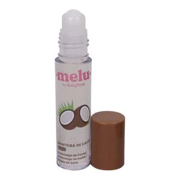
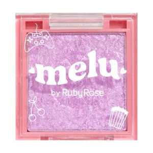
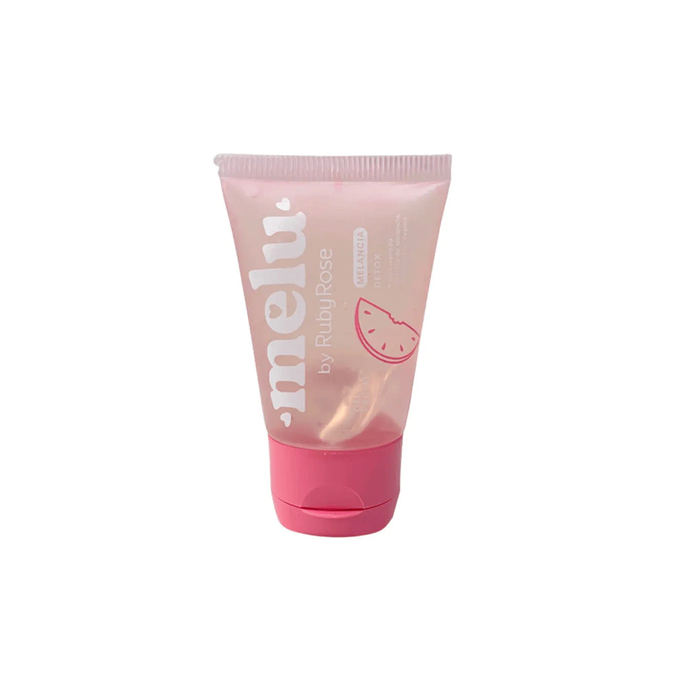
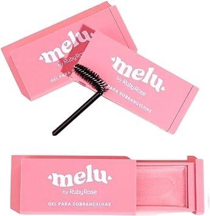
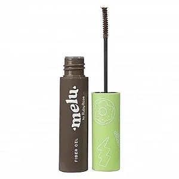
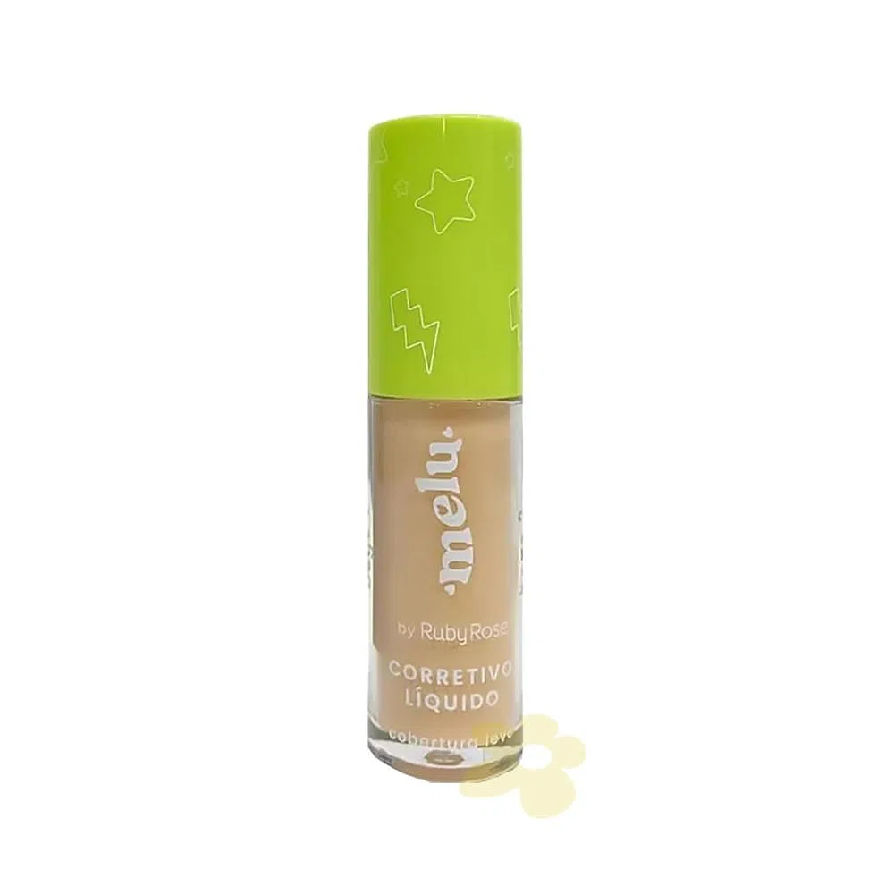
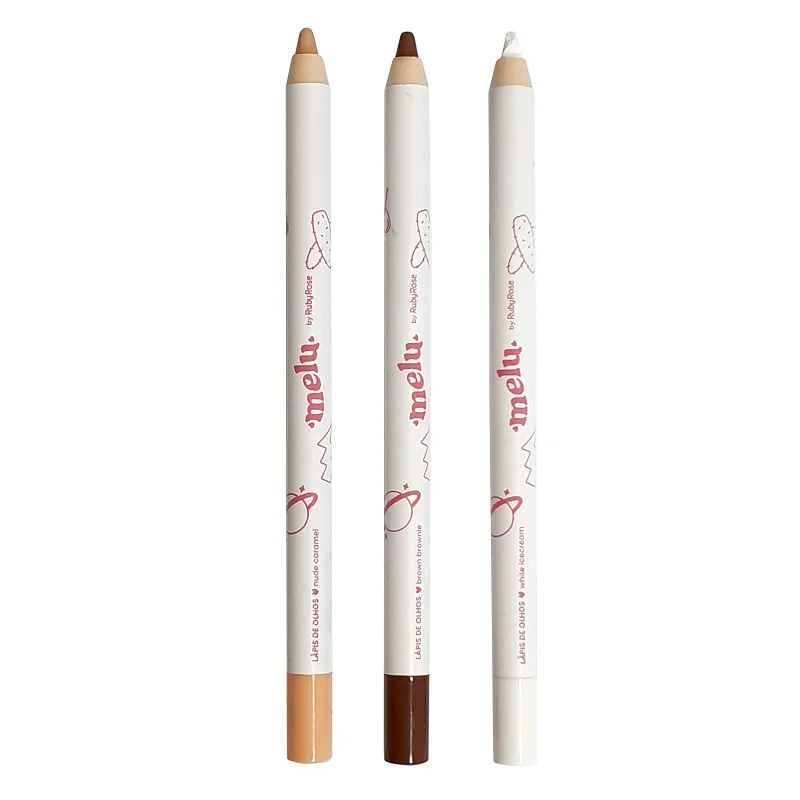
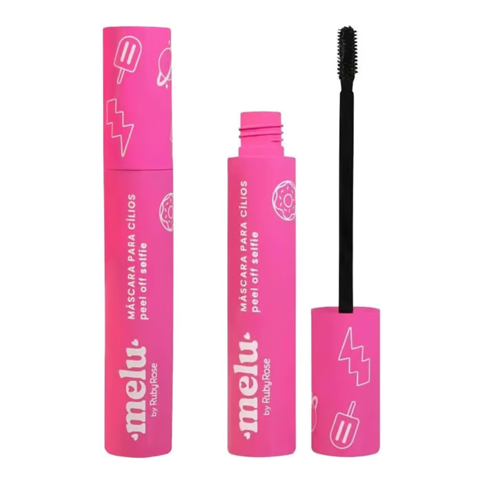
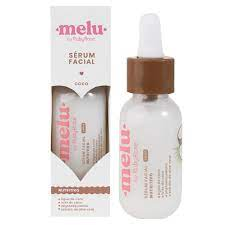

| IMAGEM | PRODUTO | UTILIDADE | PREÇO RUBY ROSE | PREÇO SUMIRÊ | PREÇO MIGA SUA MAKE |
|  | Manteiga De Cacau Coco Rr7800 Melu |
Auxilia na hidratação dos lábias e deixa um brilho sutíl neles. Também pode ser utilizada na região dos olhos para hidratação das olheiras. |
R$ 10,08 | R$ 9,90 | R$ 8,90 |

|
Pó Compacto Melu - Rr8534- Me100 - Rubyrose |
Possui textura fina, acabamento aveludado e cobertura média. O produto é macio, tem aquele toque aveludado e sequinho, fica levemente matte no rosto, mas sem ressecar a pele. |
R$ 16,72 | R$ 17,50 | R$ 13,90 |
|  | Sombra E Iluminador 2x1 Rr10862 Melu By Rubyrose |
É um produto 2x1 para usar como iluminador e sombra, com várias partículas de brilho e uma textura cremosa e macia. Com excelente pigmentação e alta fixação. |
R$ 21,00 | Produto indisponível | R$ 16,90 |
|  | Gel Facial Hidratante Melancia Rr5601 Melu |
Sua fórmula possuia uma combinação de MELANCIA com ação DETOX que ajuda a melhorar a textura e uniformização da pele, combatendo os radicais livres, responsáveis pelo envelhecimento precoce. |
R$ 14,42 | Produto indisponível | Produto indisponível |
|  | Gel Para Sobrancelhas Melu Rrf518 Rubyrose |
Proporciona o efeito temporário de brow lamination que consiste em deixar os fios da sobrancelha alinhados para cima, dando a impressão de sobrancelhas mais grossas e cheias |
R$ 13,00 | R$ 12,50 | R$ 9,90 |
|  | Gel de Sobrancelhas Fiber Melu by Ruby Rose |
Possui fibras sintéticas que aderem às suas sobrancelhas, preenchendo falhas e proporcionando volume instantâneo além de fixar suas sobrancelhas no lugar, garantindo que elas permaneçam impecáveis o dia todo. |
Produto indisponível | Produto indisponível | R$ 11,90 |
|  | Corretivo Líquido Cobertura Leve Melu by Ruby Rose |
Ideal para camuflar manchinhas, olheiras e imperfeições uniformizando o tom da pele, com efeito natural e um toque de maciez, acabamento matte, secagem rápida, com uma fórmula antioxidante e um aplicador gordinho que permite a aplicação uniforme em toda a face, podendo até ser usado como base. |
R$ 16,25 | Produto indisponível | R$ 13,90 |
|  | Lápis de Olhos Melu by Ruby Rose Cor 03 Marrom Brownie |
Perfeito para delinear os olhos e a linha d'água. Sua textura macia permite que na aplicação ele deslize com facilidade e seja fácil de esfumar. É super pigmentado e ideal para todos os estilos de make. |
R$ 13,20 | R$ 11,90 | R$ 9,90 |
|  | Máscara de Cílios Peel Off Selfie Melu by Ruby Rose |
A Máscara para Cílios Selfie é peel off, ou seja, consegue ser removida de forma fácil e em pedacinhos, sem borrar. Conta com um pequeno aplicador com mini cerdas que alcançam desde a raiz dos cílios deixando-os mais alongados e definidos desde a primeira camada, sem empelotar. |
R$ 23,20 | R$ 22,90 | R$ 17,90 |
|  | Serum Facial Nutritivo De Coco Rr4001 Melu |
Utilizado para skincare como hidratante e antes de preparos de maquiagem também. Além de atuar como o hidratante, seu uso evita o envelhecimento precoce da pele e auxilia no tratamento de marcas. |
R$ 8,46 | Produto indisponível | Produto indisponível |